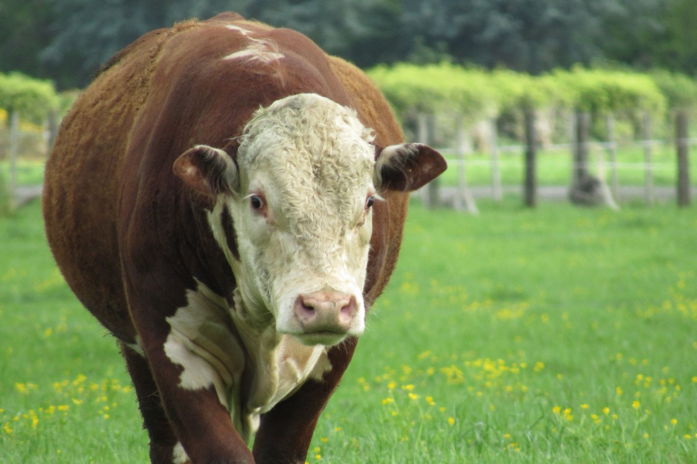
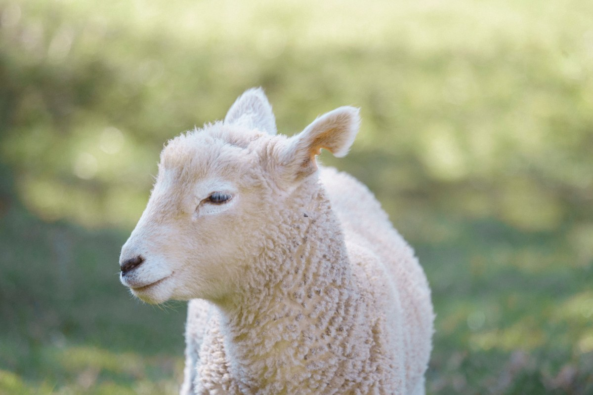
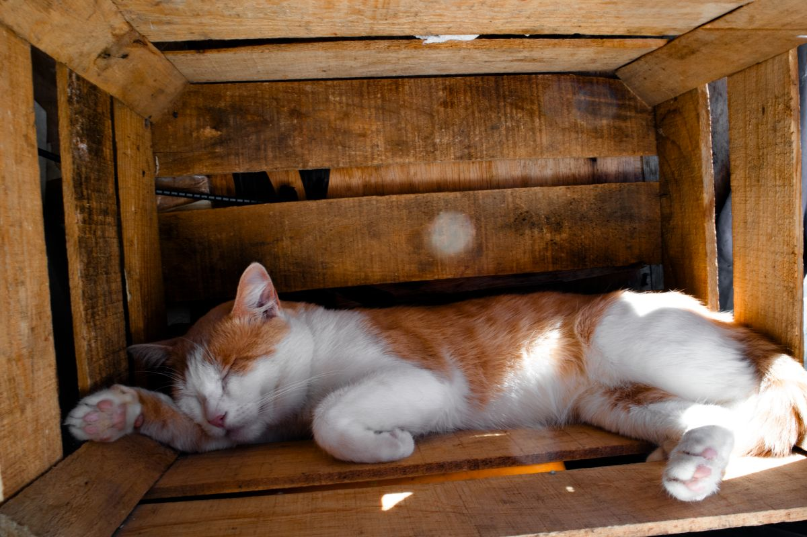
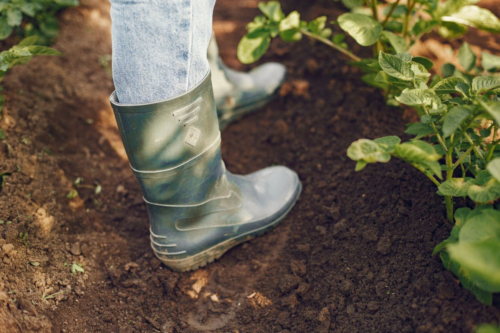
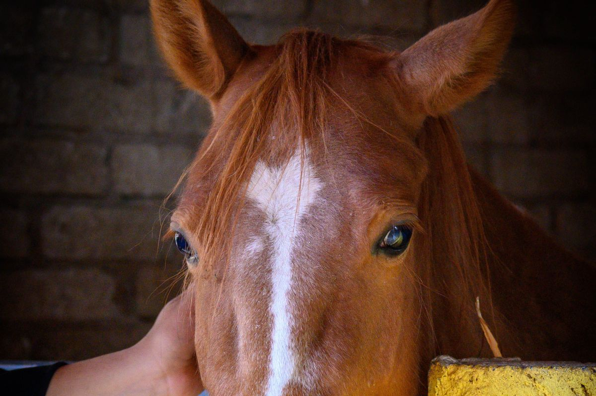
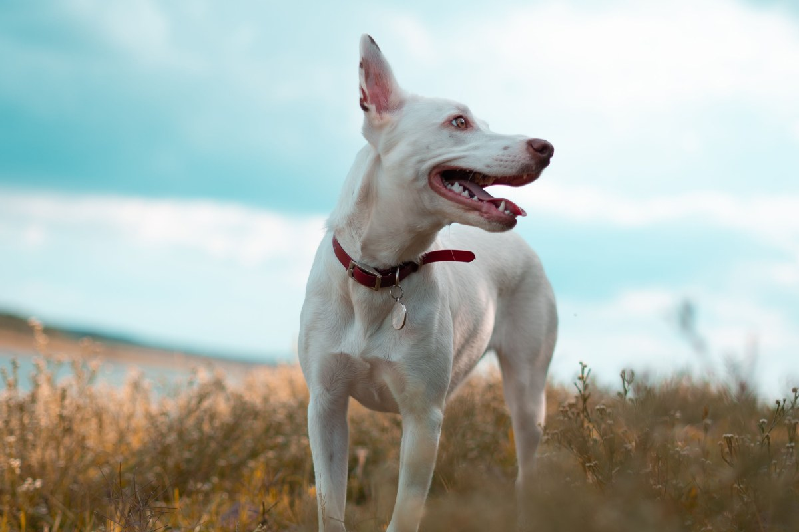

Pitrufquén · Av. 2 de Enero 876
Del perro de la casa al animal del campo.
Clínica y farmacia veterinaria en el centro de Pitrufquén.
- 135reseñas en Google
- 4,5de nota promedio
- 3.564me gusta en Facebook
- 0páginas propias: sólo Facebook e Instagram
Antes de salir
¿Para quién es la visita?
Atienden a los dos, y la farmacia también.
- CASA
Perro o gato
Consulta, vacunas y controles.
- CAMPO
Animales grandes
Insumos en su farmacia veterinaria.
- URGENCIA
Algo pasó hoy
Llame antes de salir, para que lo esperen.
- FARMACIA
Sólo el remedio
Lleve la receta o el nombre del producto.
Cómo recibe cada caso lo confirma la clínica.
Para la casa y para el campo.
En 2 de Enero 876
Lo que hay en San Fransisco
-
Lo que la distingue
Farmacia veterinaria
Con insumos para el campo.
-
Para la casa
Consulta
Perros y gatos.
-
Para prevenir
Vacunas
Y controles.
-
En pabellón
Cirugía
Consulte por teléfono.
-
Por dentro
Exámenes
Laboratorio, radiografía y ecografía.
-
Fuera de horario
Urgencias
Las guías dicen 24 horas.
Servicios de guías en línea y de su Facebook: la clínica los confirma.
135 reseñas y un 4,5.
En el centro de Pitrufquén
Casa, campo y farmacia
Un día en la clínica






Fotos de referencia: ninguna es de la clínica.
Dónde estamos
2 de Enero 876, Pitrufquén
- Dirección
- Av. 2 de Enero 876
- Teléfono
- (45) 239 2395
- San Francisco Veterinaria
- @vetsanfranciscopitrufquen
Las guías no coinciden en el horario: confírmelo por teléfono antes de ir.
Av. 2 de Enero 876, Pitrufquén Abrir en Google Maps
Para el dueño
Qué es real y qué falta
Lo verificado
Dirección, teléfono y las 135 reseñas de su ficha; la farmacia para animales grandes, de su Facebook.
Lo de ejemplo
Cómo pedir cada motivo y las fotos. El nombre va como en Maps.
Lo que falta
El horario (dos guías no coinciden), si la urgencia es 24 horas y un celular con WhatsApp.